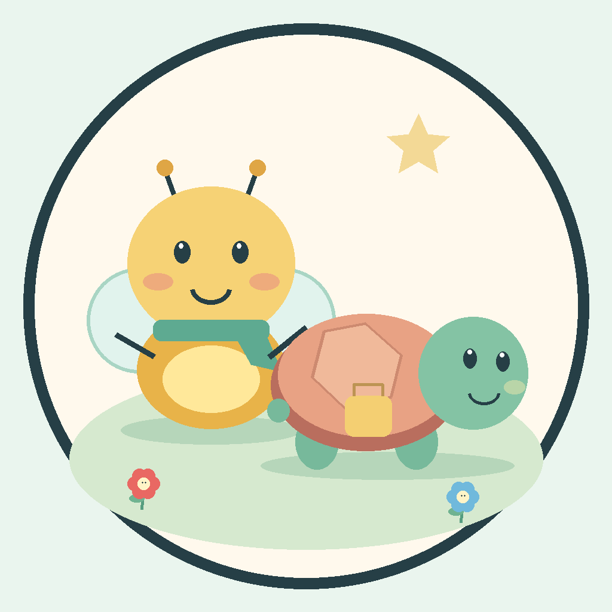

QUINTAL DE TUCA E LUMEHistórias para descobrir juntos.
Personagens originais, cores, números e convivência em português do Brasil.
Visitar o canal no YouTubeSobre o aplicativo
O Estúdio local Tuca e Lume é um programa de uso pessoal do responsável pelo canal. Ele coordena pesquisa de referências públicas, criação de histórias, revisão automática, narração sintética, ilustrações digitais e publicação de vídeos.
O aplicativo funciona no computador do titular, com componentes de código aberto. Não oferece login ou cadastro ao público e não é um serviço para outras pessoas conectarem suas contas.
Acesso ao YouTube
Com autorização do titular, o aplicativo usa a API oficial do YouTube para identificar o canal conectado e enviar seus próprios vídeos. O canal autorizado é Quintal de Tuca e Lume. O público infantil não concede acesso a contas nem envia dados ao estúdio.
Conteúdo e acompanhamento
As séries são destinadas às faixas de 2 a 4, 5 a 6 e 7 a 9 anos. Os vídeos são histórias ilustradas, com movimentos lentos de câmera e voz sintética. Acompanhamento de um responsável é bem-vindo. A revisão automática pode falhar e os vídeos não substituem ensino ou orientação profissional.
Conheça a política de privacidade e os termos de uso.